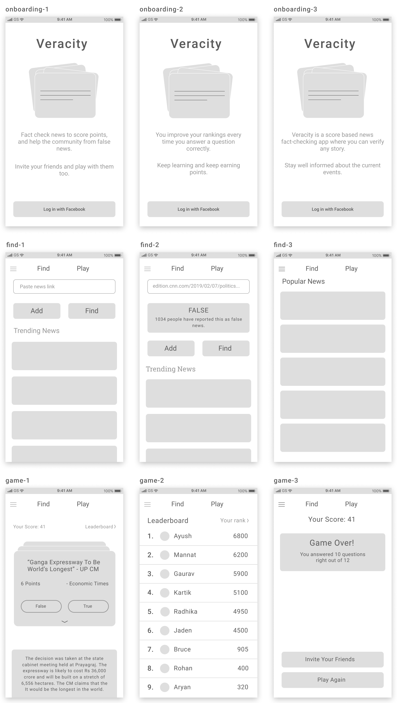
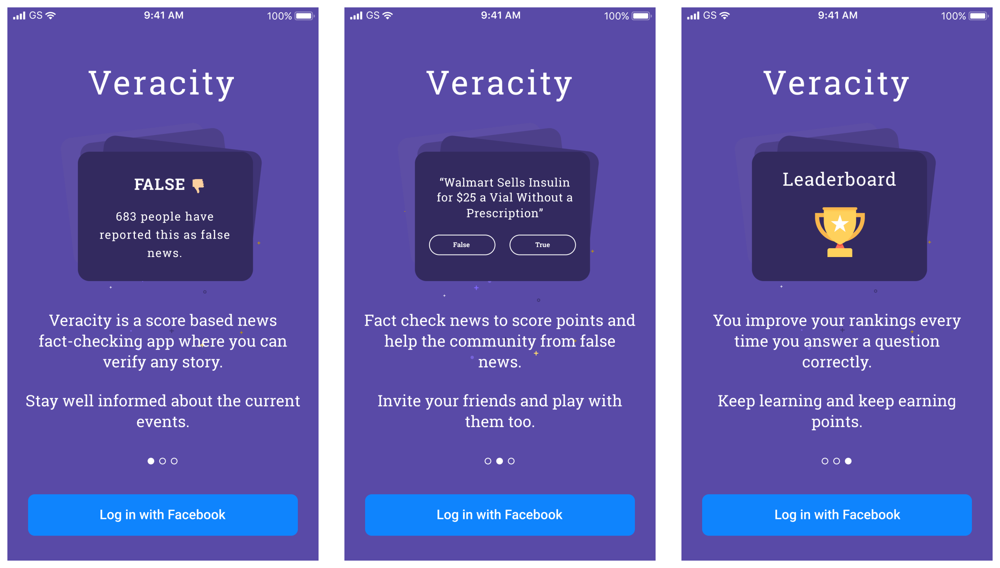
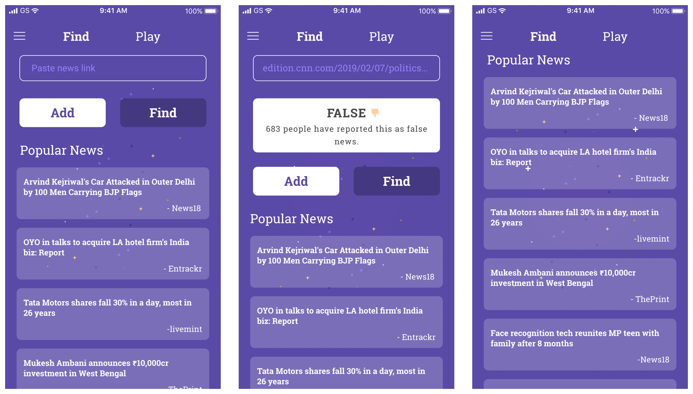
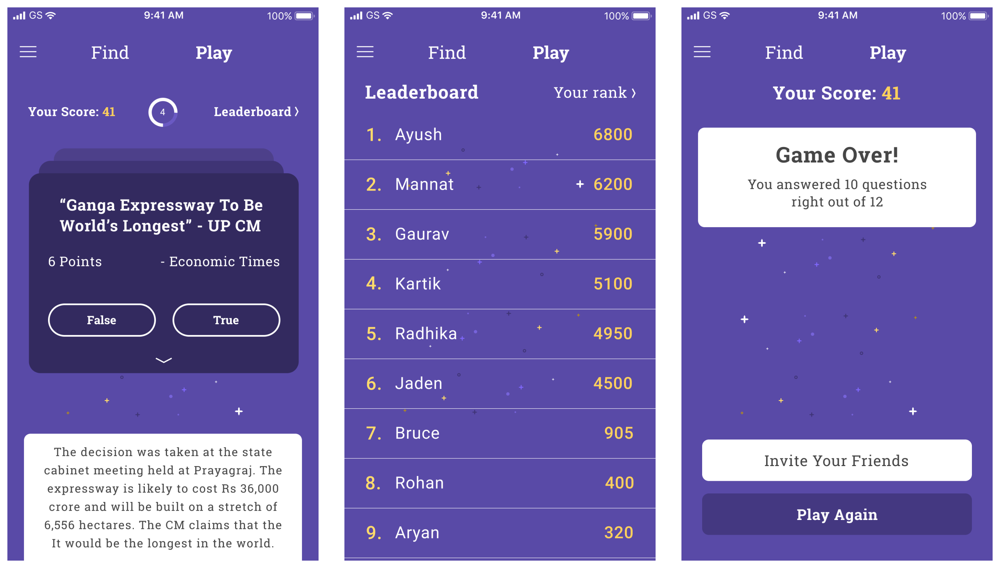

Veracity: Finding False News

Timeline - 3 Days, January 2019
The Problem
Nowadays most people typically consume their news through social media, resulting in a surface-level misinformed understanding of the current events. There has also been a decrease in how much of an article that people read.
Most people will just scroll through their newsfeed and stumble upon relevant news content but just read the headlines.
There are also many "fake news" that compete for attention with sensational headlines which tends to get shared more often due to the lack of readers fact checking or reading more than the headline.
And news always played a significant role in influencing decisions for people.
Ideation
Interested by this problem, I wanted to design a platform (mobile application) to help fact check the news content which seems false. The way I thought to solve this issue is to design a score based news checking app where users can mark an article right or wrong.
If the news gets more positive response, it will be counted as true and if it receives more negative response, it'll be counted as false. Simple.
I also thought of gamifying this concept because it can immensely help in increasing the user participation in fact checking the news and the community from false news.
Sketching
Before sketching my ideas, I started to look for some design inspirations and analysed few apps.
I made this observation this -
Designing onboarding page and letting user know what they can do in this app before they start using is important.
Low-Fi Wireframes
High-Fi Wireframes
Onboarding
I focused on the onboarding experience because in my research I found that it's important to let user know what they can do with the app.
I also opted for Facebook sign in option because it makes it easier for everyone to quickly sign in and use the app. It saves the hassle of entering all the details like name, password etc.
Homepage - Find
After signing in, the homescreen shows two option at the top - Find and Play.
Find is where the user can paste the news article link to find out if that news is correct or wrong. The outcome is based on, if the news recieived more positve or negative response. If that news is not present in the database, there is this option of "Add" which can be used to add this news.
Game
Play is where you user can fact check an article and mark it right or wrong. If the news gets more positive response, it will be counted as true and if it receives more negative response, it'll be counted as false.
User's ranking will improve everytime they answer a question correctly and their ranking falls everytime they answer a question wrong.
I thought this gamification part is essential to maintain and increase user engagement which helps the community from false news.
Bottom Note
This simple design project taught me to focus on the end goal by focusing on the things like increasing user engagement through gamification and focusing on the onboarding rather than directly jumping to sign in page because letting user know what they can use this app for before they start using it is important.
Thanks for reading! Reach out to me on Twitter